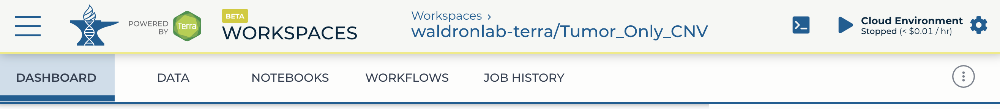
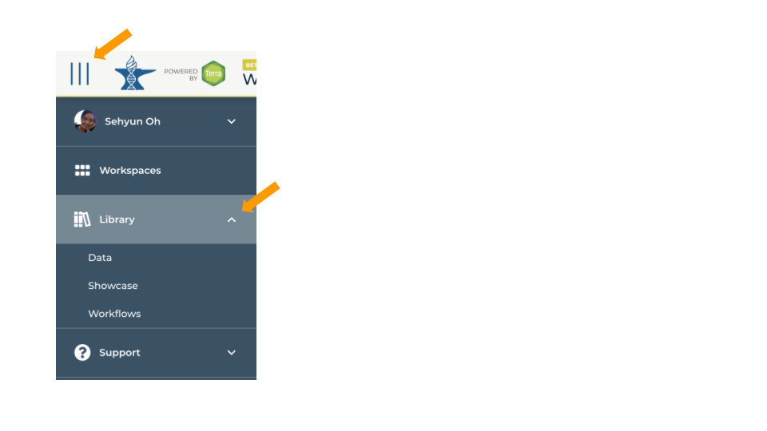
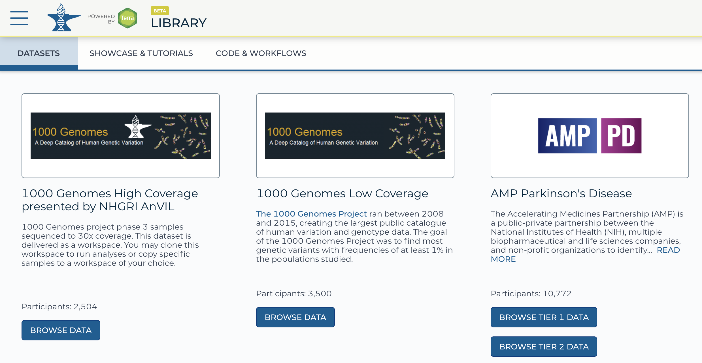
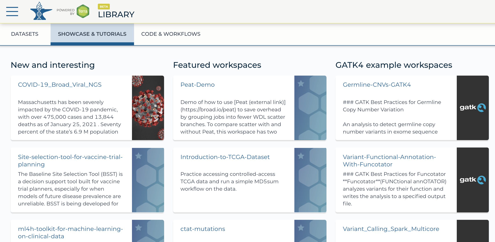
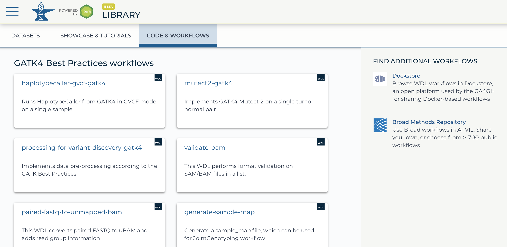

The rapidly growing size of genomic datasets introduces challenges of data transfer, storage, access, sharing, and computing. Cloud-based genomics platform is one of the solutions and many of them already exist hosting different dataset and analysis tools. Below is the brief example of a few:
| Platform | Hosted Data | Analysis Tools |
|---|---|---|
| Terra | CCDG, eMERGE, TCGA, TARGET, TOPMed, etc. | WDL, Notebooks, RStudio, Galaxy |
| Seven Bridges | TOPMed | CWL, Notebook, RStudio |
| Seven Bridges | TCGA, TARGET, ICGC, etc. | CWL, Notebook, RStudio |
| ISB-CGC | TCGA, TARGET, etc. | GCP tools, such as Google BigQuery |
In this workshop, we are focusing on Terra. Terra is the analysis platform of AnVIL (Analysis, Visualization and Informatics Lab-space) project launched by NHGRI.
1. Data : secure remote access to public genomic data without paying storage (powered by GEN3)
2. Workflows : best practice tools and pipelines already implemented (powered by Dockstore)
3. Notebooks : interactive analysis interfaces such as Jupyter notebook (default), RStudio, and Galaxy.
4. On-demand computational capacity through Google Cloud Platform
(From MaGIC Jamboree)
If you want to try Terra after the conference, you can claim $300 Google credits following this instruction.
Workspace is the main building block of Terra, where different resources are delivered through. Depending on your goal, you can use a workspace for hosting data, building production pipelines, collecting analysis templates, or all of above! - You can use a Terra workspace to keep all the components of your project - data, metadata, and analysis tools as well as documentation and provenance - together.
You can find more detail about workspace in this article, Intro to working with workspace, and video by Broad’s Terra team.

1. Dashboard: Documentation and workspace information
Here is where you describe the research project - what questions you are trying to answer, what kind of data and analyses you will use, etc. Documentation is important! Well-documented workspaces make it easy to share and collaborate. This tab also includes information about the workspace owner and creation date.
2. Data: Organize and access data-in-the-cloud
Terra uses tables, which are like built-in spreadsheets, to help access and organize the data you will use. Data can be in your workspace bucket, or in Google Cloud Storage or BigQuery. Tables connect workspace tools to the data with metadata links to the actual location in the cloud.
3. Notebooks: Interactive analysis
In the notebooks tab you can launch an in-app Jupyter Notebook and interact with the data using Python or R.
4. Workflows: Pipelining analysis
In the workflows tab you will find workflows for bulk analyses. These are the sorts of repetitive analyses that can be automated, such as what you would use to align sequencer reads. Workflows in Terra are written in in Workflow Description Language and are called WDLs.
5. Job History: Provenance and troubleshooting
In this tab you can check on the status of workflow submissions, and dig down into error logs for help with troubleshooting errors or submission failures. Your workspace also maintains a list of all previous submissions, for reproducibility and provenance.
Terra has three distinct libraries that can be used as resources to build the workspace you need for your analysis. To access the libraries, click the Hamburger button (three horizontal lines) at the top left of any page and open the “Library” submenu. Under the Library submenu, you can see the list of Terra’s major resources: Data, Showcase, and Workflows.

Terra hosts both open- and controlled-access datasets. Select datasets have built-in functionality (“Data Explorers”) for exploring and creating customized subsets from the data.
Here are the available datasets in Terra through various awards:
- AnVIL : CCDG (Centers for Common Disease Genomics), CMG (Center for Mendelian genomics), GTEx (Genotype-Tissue Expression Project), eMERGE (Electronic medical records and genomics)
- STAGE : TOPMed (Trans-Omics for Precision Medicine)
- NHS (The Nurses’ Health Study)
- HCA (The Human Cell Atlas)
- ENCODE (The Encyclopedia Of DNA Elements)
- TCGA (The Cancer Genome Atlas), TARGET (Tumor alterations relevant for genomics-driven therapy)
Note that registering for Terra itself does not automatically grant access to all available data.

Showcase & Tutorials (template workspaces) are intended to ensure users to reproduce instructive results and learn establisehd methodologies.
Featured workspaces
- Tutorial workspaces
- Specific use cases based on published work
- Give users a chance to understand their peers’ experimental design
Example (GATK) workspaces
- Showcase reproducible examples of GATK workflows and tools for general use
- Many contain tools developed at and supported by Broad

The Code & Workflows section contains various tools and tasks that make up components of workflows. Users familiar with running workflows can use this repository to find workflow components to run individually or to string together using Workflow Description Language (WDL).
This section also includes links to other helpful open source workflow repositories. Look to the right of the Code & Workflows tab under “FIND ADDITIONAL WORKFLOWS.”
